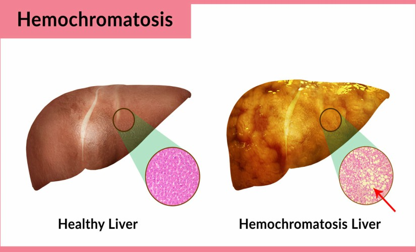

Here are 10 reasons why you should donate blood:
Blood is the most precious gift that anyone can give to another person — the gift of life. A decision to donate your blood can save a life, or even several if your blood is separated into its components — red cells, platelets and plasma — which can be used individually for patients with specific conditions.
Donating blood regularly has proved beneficial not only for the recipient but also the donor. It is helpful for the vital organs, and it reduces risk for chronic diseases such as cancer and stroke.
1. Reduce risk of heart attacks and liver ailment
Donating blood regularly is beneficial to prevent and reduce heart attacks and liver ailment. The risk of heart and liver related problem is caused by the iron overload in the body. Donating blood helps in maintaining the iron level in the body and thus reduce those risk.
2. Lower the risk of cancer
Cancer is the most feared and deadly disease. Blood donation helps in lowering the risk of cancer. By donating blood regularly the iron level in the blood is balanced and the risk of cancer-related to the liver, lungs, and intestine gets lower.
3. Maintain Weight
It is recommended to donate blood for those who are overweight. Regularly donating blood helps in weight loss and burns fat up to 650 calories.
4. Lower cholesterol level
Blood contains iron, if the iron in blood is overloaded it can increase the chances of blockage in blood vessels. Blood donation can help to reduce the amount of iron in the blood thus helps in lower cholesterol.
5. Speeds up healing process
The body tries to adjust to the loss of red blood the cells we donate blood, these adjustments also help in accelerating the wound healing process.
6. Helps prevent premature ageing.
While donating blood, you not only lose weight but it also helps in reducing stress. Stress is one of the reasons that triggers premature ageing. Blood donation helps in reducing stress on your mind and body. Also, keeps the skin tight and wrinkle-free.
7. Reduced risk of hemochromatosis
Hemochromatosis is a disease that occurs due to increase in the absorption of iron by the body. Blood donation helps in reducing iron overload in the body and prevent Hemochromatosis.

8. New blood cells
Once we donate blood, the body tries to restore the blood loss. This helps in the production of the new blood cells and maintain good health.

9. Live a longer life
The people who involve in the altruistic work have proven to live a longer life. Blood donation is altruistic works so it not only save lives of other but also helps you live longer and healthier.
10. Save lives
Every time we donate one pint of blood it helps save three lives, so if we donate four times in a year we end up saving 12 lives. We don’t have to be a superhero to save someone, a simple act of donating blood can also save lives.
PREPARING TO DONATE
Here are the DOs and DON’Ts of preparing to donate blood: